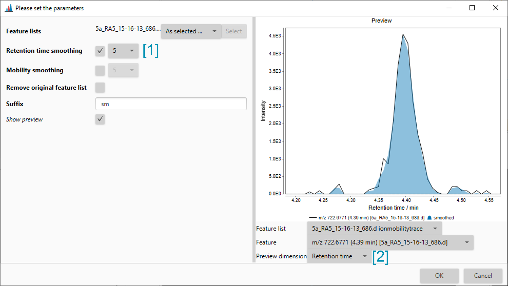

LC-MS Workflow¶
Raw data processing¶
Raw data import¶
Raw data can be imported via the main menu Raw data methods → Raw data import. Note that multiple data files/folders can be dropped into the MS data (advanced) dialog. If individual modules are used, folder based formats can only imported as one folder at a time. When using the MS data (advanced) dialog, inexperienced users should deactivate the direct mass detection steps, since they alter the raw data on the import. Mass detection is then performend, when the scans are loaded and only peaks above the noise level are imported.
Alternatively, you can simply drag & drop the raw data into the raw data list of the main window.


Mass detection¶
The mass detection steps perform noise filtering (by a threshold) and centroiding of profile raw data. The raw data format can either be centroided or in profile mode. If the data is centroided, the centroid mass detector can be used. Profile data requires a different mass detector such as exact mass.
The mass detection is launched via Raw data methods → Mass detection → Mass detection ([1] in the figure). In the dropdown menu [2], an applicable mass detector should be chosen and configured via the Setup button [2]. By selecting the Show preview checkbox, a scan can be selected to adjust the noise level.
The output of the mass detection step, can be referred to as mass list, since it will only contain a list of selected m/z values.

Setting the noise level¶
Choose the noise level to detect (= red dot) actual peaks but filter out detector noise. The detector noise is usually determined by a lot of signals of the same intensity.
Feature processing¶
After raw data processing, the first step of feature detection is building extracted ion chromatograms (EICs). This step can be executed by the ADAP chromatogram builder or Grid mass.
ADAP chromatogram builder¶

Scan selection¶
The scan selection parameter specifies the scans that shall be processed for feature detection. Usually, setting the ms level to 1 is sufficient. If a calibration segment is present, it can be cut out via the retention time filter in the scan selection.
Min group size in # of scans¶
This parameter specifies the number of consecutive detections of the same m/z value in a chromatographic peak (rt dimension). This means that a single m/z has to be detected in, e.g, 5 scans with an intensity higher than zero. This parameter helps to filter noise. Usually no less than 5 should be set here if the MS1 acquisition rate is sufficient.
Group intensity threshold¶
Specifies a minimum intensity that the number specified by min group size have to exceed. In this example, the intensity in at least 5 scans must be above 5E2.
Minimum highest intensity¶
The highest point of a potential EIC must exceed this value.
Scan to scan accuracy (m/z)¶
The m/z tolerance specifies the scan-to-scan tolerance for EICs. This tolerance depends on the mass accuracy and resolution of the instrument. Usually, a good starting point for optimisations are 0.005 and 5-10 ppm for Orbitrap instruments, while 0.005 and 10-15 ppm can be used for TOF instruments.
Smoothing in retention time dimension (optional)¶
The necessity of smoothing in RT dimension is determined by the noisiness of chromatographic peaks. These can be influenced by the overall spray stability, instrument accumulation times, transfer efficiency and many more.
The number of data points to be smoothed in rt dimension can be set at [1]. Note that the correct preview dimension is selected at [2].
For large batch modes, the Remove original feature list parameter should be selected. While parameters are being optimised, this is not recommended, because removing a feature list cannot be undone.

Feature resolving¶
Here, the Feature detection → Resolving → Local minimum resolver is used. However, the ADAP resolver also produces great results, but takes longer to process.
Resolving traces/chromatograms into individual features, is one of the most crucial steps of data
processing. Well optimised parameters [1] can lead to recognition of all good features in a "good"
EICs [2] and to few noise recognised as feature in EIC that also contains chromatographic noise
[3].
On the other hand, poorly optimised parameters [4] can still lead to recognition of all features in
a good EIC [5], but recognise a lot of noise as feature in a noisy EIC [6].
Therefore, we recommend optimising the parameters on good EICs and checking the results of these
parameters with a noisy EIC. Most of the time, a noisy EIC can be found by sorting the feature table
by decreasing area.

MS/MS scan paring¶
Selecting this parameter will pair DDA MS/MS spectra to the resolved features. This is optional at this stage, because it will be executed again during resolving in the mobility dimension.
Dimension¶
The dimension to be resolved can be selected here. Select Retention time.
Chromatographic threshold¶
This parameter is crucial for removing noise from chromatograms. If this parameter is set to, e.g., 50, the lowest 50 % of intensities will be removed. Since the all retention time in the data file are used for this determination, this value should be rather high (e.g., 95 %) to begin with and only lowered if necessary.
Search minimum rt range (min)¶
Determines the step size that will be scanned for individual peaks. Setting this value too low, can cause peak edges to be cut off, setting it too high might lead to incomplete separation of narrowly eluting compounds.
Minimum relative height¶
Determines the minimum relative intensity of a individual feature in relation to the highest intensity in the chromatogram. May lead to discrimination of low intensity features.
Minimum absolute height¶
Determines the minimum absolute intensity of a feature to be recognised by the algorithm. This parameter depends on what you want to detect, the instrument and detector type. Usually, Orbitrap instruments report higher intensities that TOF instruments. However, the noise level is also higher for Orbitrap than for TOF instruments. For TOF instruments 1E3 or even 5E2 can be appropriate, whilst Orbitraps can require 1E5 or 5E4.
Min ration of peak top/edge¶
Describes the minimum ratio of the highest point of a peak to the lowest point of a peak. This mostly affects detection of low intensity and not-baseline-resolved signals and should be optimised using such a signal as an example.
Peak duration range¶
Describes valid peak lengths. Can be used to filter out very short or long noise signals.
Minimum number of data points¶
Can be used in addition to Peak duration range to filter out noise. Should be set no lower than 5 in most cases.